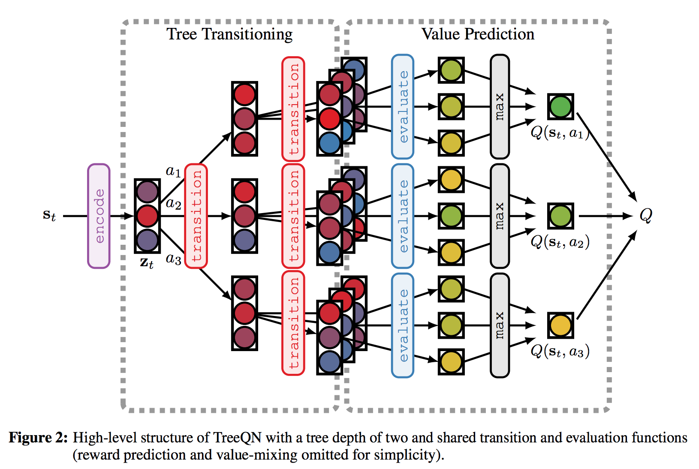
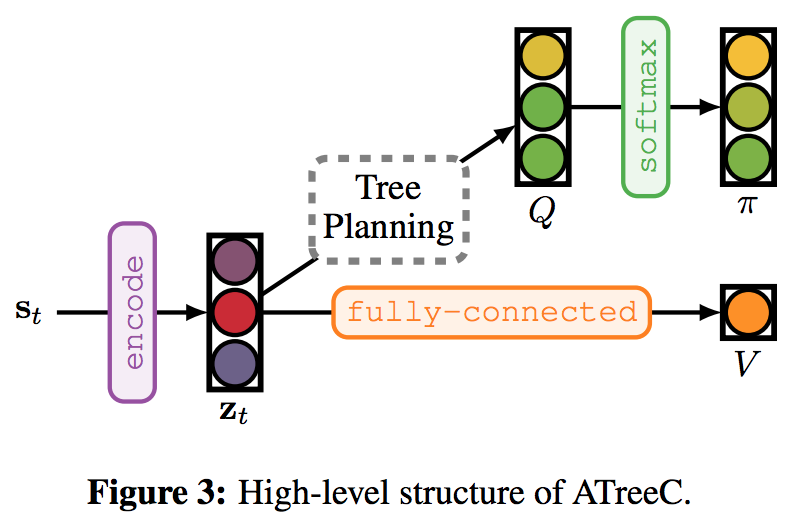
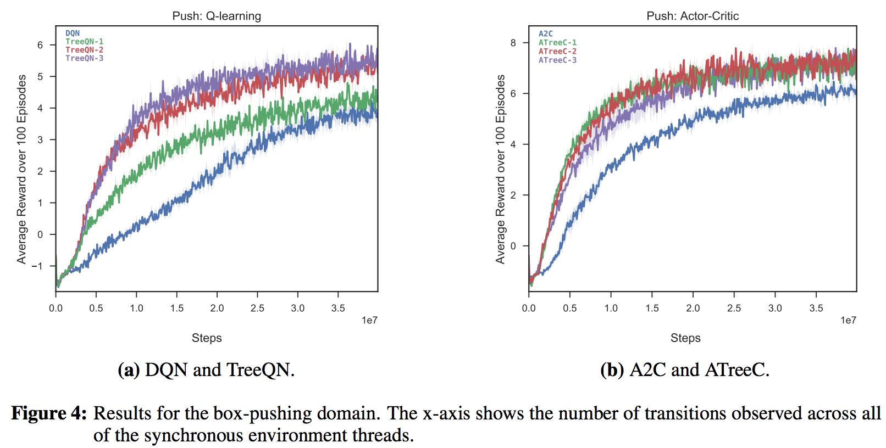
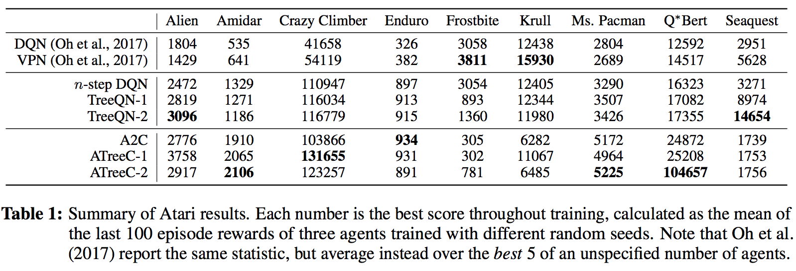
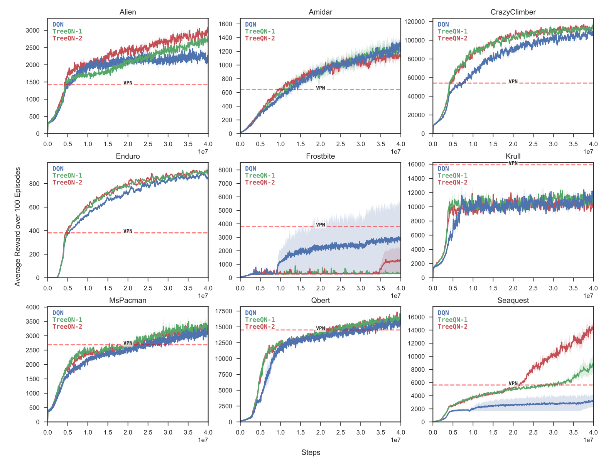
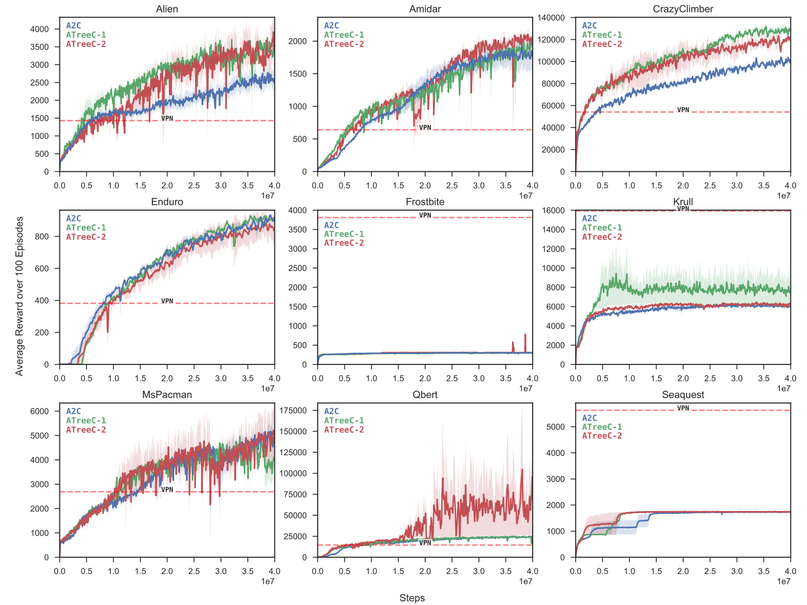

TreeQN And ATreeC: Differentiable Tree Planning For Deep Reinforcement Learning
В данной статье авторы вводят алгоритмы обучения с подкреплением под названием TreeQN и ATreeC, которые авторы позиционируют как новый взгляд на планирование и его использование в сложных средах. Данная модель выделяется тем, что обучается одна модель end-to-end, и что она не обучается точно предсказывать следующее состояние. Также авторы сравнивают свои алгоритмы с аналогами (DQN и A3C) на средах Atari и в ещё одной простой игре.
Background
В обучении с подкреплением у нас есть марковский процесс принятия решений (MDP), состоящий из:
- S – множество всех состояний (s)
- A – множество всех действий (a)
- R – функция награды (r), отображение декартового произведения множеств S и A на ось действительных чисел
- P – функция вероятности перехода из состояния s в s’ при совершении действия a
Мы хотим на каждом шаге совершать такие действия, которые будут максимизировать функцию, называемую Return:
\[G_t = r_t + \gamma r_{t+1} + \gamma^2 r_{t+2} + ... = \sum\limits_{t^{'}=t}^T \gamma^{(t^{'}-t)} r_{t^{'}}\]
Понимать, какие действия лучше, а какие – хуже, мы будем с помощью (оптимальной) Q-функции, равной
\[Q^*(s,a) = \mathbb E_{\tau}[G_t| a_t=a, s_t=s] = \mathbb E_{\tau}\left[\sum\limits_{t^{'}=t}^T \gamma^{(t^{'}-t)} r_{t^{'}} | a_t=a, s_t=s\right],\]
где \(\tau\) – траектория1. То есть Q-функция – это дисконтированная суммарная будущая награда при условии, что мы будем действовать оптимально. Жадный выбор действия с наибольшей Q(s, a) в каждом состоянии s и будет давать нам оптимальные действия.
Предсказывая Q(s,a) любым дифференцируемым аппроксиматором, мы обучаем его параметры с помощью следующей функции ошибки: \[L(\theta) = \mathbb E_{(s_t, a_t, s_{t+1})}[(Q^{\theta}(s_t,a_t) - (r + \gamma \max_{a}Q^{\theta^-}(s_{t+1},a)))^2]\\\\\]
Данный алгоритм с некоторыми модифицикациями носит название Deep-Q-Network (DQN), и в нём аппроксиматором выступает нейронная сеть.
Advantage Actor-Critic (A2C) использует другой подход. Он максимизирует ожидаемую дисконтированную награду напрямую по параметрам политики:
\[J(\pi) = \mathbb{E}_{\tau}\Big[\sum\limits_{t=0}^T \gamma^t r(s_t, a_t) \Big],\]
при этом используется следующая формула для градиента (получается с помощью т.н. log-derivate trick’а)
\[{\nabla_{\theta}} J(\pi) = \mathbb E_{\tau}\bigg[\sum_{t=0}^T \nabla_{\theta} \log\:\pi(a_t | s_t) \left(Q^{\pi}(s_t, a_t) - \mathbb E_{a_t\sim \pi}[Q^{\pi}(s_t, a_t)]\right)\bigg],\] где мат. ожидание Q(s,a), также известное как V(s) или Value-функция, оценивается отдельно сетью, называемой Critic. 2
Planning
Планирование – это принятие решения, основанное на том, какие состояния мы будем встречать в будущем, а также на том, какие действия мы будем совершать. Ранее были опубликованы статьи с использованием различных методов планирования для решения задач обучения с подкреплением. Популярный пример – поиск по дереву методом Монте-Карло, который был использован в алгоритме AlphaGo. Однако, такой метод работает только в случаях, когда у нас в распоряжении имеется идеальная модель среды, что бывает далеко не всегда.
Можно обучить нейронную сеть, которая будет предсказывать следующее состояние по текущему состоянию и действию (Recurrent Environment Simulators), но, по словам авторов статьи, такие модели работают недостаточно хорошо, в том числе потому что предсказывают помимо важной информации ненужный шум, который содержится в среде.
TreeQN
Авторы статьи вводят необычный способ планирования в рамках задач со сложной динамикой, внося следующие изменения в архитектуру: пусть вход последнего полносвязного слоя у DQN будет обознчаен как z. Теперь, вместо последнего полносвязного слоя в обычной DQN, в котором по z предсказываются Q-значения, сеть пытается предсказать значение z на следующем шаге, если совершит каждое из действий:
\[ z_{t+1}^{a_i} = z_{t} + \tanh(W^{a_i}z_{t}) \]
Также она предсказывает награду, которую получит агент на текущем шаге (здесь размерности таковы, что \(\hat{r}\) – не скаляр, а вектор размерности количества действий):
\[\hat{r}(z_{t}) = W^r_2 \text{ReLU}(W^r_1 z_{t} + b^r_1) + b^r_2\]
Ещё есть отдельная голова, предсказывающая Value-функцию (на сей раз скалярная):
\[V(z_{t}) = w_V^Tz_{t} + b_V \]
Планирование
Модель получает состояние s, пропускает его через первые слои и получает значение z – внутреннее представление состояния, которое выучила нейронная сеть.
К внутреннему состоянию d раз применяется описанная выше “transition function”, причём действия выбираются всевозможным образом, то есть совершается экспоненциальное количество (n^d, где n – количество действий) роллаутов. Каждый роллаут содержит последовательность внутренних представлений z и последовательность наград r.
Далее происходит так называемый backup, информация о Q-значении поднимается от листьев к корню по следующему правилу: пусть мы находимся на глубине l и обновляем нашу информацию из потомков данной вершины: \[ \begin{align*} Q^l(z_{t+l}, a) &= r(z_{t+l}, a_i) + \gamma V^{(\lambda)}(z^a_{t+l+1}) \\ V^{\lambda}(z_{t+l}) &= \begin{cases} V(z_{t+l}), & l = d \\ (1-\lambda) V(z_{t+l}) + \lambda \max_{a} Q^{l+1}(z^a_{t+l+1}, a), & l < d \\ \end{cases} \end{align*} \]
Где \(\lambda\) - это параметр, отвечающий за то, насколько мы доверяем критику, а насколько – более глубокому поиску и информации оттуда, которую даёт наша модель.
После того, как наши Q-значения в корне посчитаны, мы можем выбрать действие согласно \(\varepsilon\)-жадной стратегии.
Иллюстрация, которая дана в статье:

Также мы добавляем к нашей функции ошибки помимо вышеописанной для DQN обычную средне-квадратичную ошибку предсказания награды: \[L(\theta) = L_{DQN}(\theta) + \eta \mathbb{E}_\tau \left[\sum_{t=0}^T (\hat{r}^a(z_t) - r_{t})^2\right],\]
где \(\eta\) – гиперпараметр, не очень влияет (по словам авторов) на производительность модели.
Всё описанное выше можно без труда обобщить на случай n-step DQN, когда для вычисления целевого значений Q(s,a) мы будем использовать реальные последующие состояния и награды на n шагов вперёд, а потом уже делать “симуляции”. Тогда мы сможем добавить к итоговой ошибке MSE предсказанной награды на каждом шаге.
Важно заметить, что мы не минимизируем нашу ошибку прогноза z на следующем шаге! Авторы мотивируют это тем, что хотят, чтобы модель выучивала сама только то, что ей нужно для результата.
ATreeC
В данной модели ничего разительно отличающегося от предыдующей схемы здесь нет. По сути в самом вычислительном графе здесь отличие только в том, что вероятности действий пересчитываются согласно softmax-функции относительно предсказанных Q-значений (при этом, как известно, в обычном A2C/A3C никакие Q-значения не предсказываются). Для обучения используются все те же формулы, что и у A2C/A3C. Иллюстрация к модели в статье выглядит так:

Experiments
Авторы тестируют свои алгоритмы на 2 видах сред. Первой идёт среда, состоящая из сеточного мира, в котором требуется двигать ящики в заданные точки и избегать препятствий (все подробности в полной статье).
Ниже приведены графики обучения всех алгоритмов и бэйзлайнов. Как видно из них, даже без симуляции будущего данные архитектуры работает лучше оригинальных A2C и DQN, это легко объясняется тем, что обучение предсказанию отдельно value-функции и награды повышает качество обучения. В случае с DQN дальнейшее увеличение глубины поиска даёт улучшение, в Actor-Critic такого не наблюдается.

Atari
При обучении на нескольких играх Atari авторы получают следующие результаты: 
Графики обучения TreeQN: 
Графики обучения ATreeC 
Conclusion
Авторы ввели новые архитектуры TreeQN и ATreeC, основанные на end-to-end дифференцируемом планировании, и показали, как оно используется для предсказания Q-значений
My humble opinion
Кажется, планированием это можно назвать только в кавычках, потому что ничто не заставляет нейронную сеть правильно предсказывать то, что будет далее. Авторы говорят, что мы так позволяем нашей нейронной сети выучить предсказывать только ту информацию о будущем, которая ей полезна в дальнейшем, но ничто не гарантирует то, что нейронная сеть будет заниматься каким бы то ни было предсказанием будущего в принципе.
В статье нет хороших примеров работы сети, когда видно, что сеть предсказывает какие-то события с большой наградой на следующих шагах. (точнее, 1 пример есть, но он не совсем корректный, потому что действие, которое приводит к награде через 1 шаг, можно совершить и на данном шаге). Вполне вероятно, что сеть таким образом просто выучивает какое-то более удобное внутреннее представление, с помощью которого Critic лучше предсказывает Value-function, отсюда и небольшое улучшение производительности (и то только в TreeQN, в ATreeC добавление планирования не даёт значимого улучшения в среднем). Авторы обещают придумать, как сделать модель более интерпретируемой и как сделать планирование более глубоким. Интересно, получится ли у них это сделать, будем наблюдать.
Траектория – это последовательность вида \((s_0, a_0, s_1, a_1, \dots, s_{T}, a_{T})\), получаемая следующим образом: начальное состояние \(s_0\) генерируется из некоторого распределения над начальными конфигурациями \(p(s_0)\), на каждом шаге агент семплирует действие из политики \(\pi(a_t|s_t)\), в ответ на что среда переходит в случайное состояние из \(p(s_{t+1}|a_t, s_t)\).
Все распределения могут быть вырожденными, что приведёт к детерминированным эффектам. Надо заметить, что если политика детерминирована и дискретна, то мы получаем задачу дискретной оптимизации, которую мы не очень-то умеем решать.↩Саму Q(s, a) можно либо оценивать по семплам (просто дисконтированно просуммировать награды до конца эпизода, это будет Monte Carlo оценка настоящей функции Q(s, a)), либо оценить с помощью нейросети. В последнем случае градиент будет смещённым, зато дисперсия (fingers crossed) будет поменьше.↩